Ungleichung für die Multiplikation vom Limes Superior / Inferior
1. Satz
Seien  und 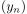 Folgen in
und 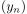 Folgen in  , so gilt:
, so gilt:
 1
1
2. Beweis
Wir wissen, dass für jedes  für fast alle
für fast alle  gilt 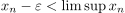, analog auch für 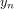
Daraus folgt:
gilt 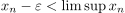, analog auch für 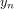
Daraus folgt:
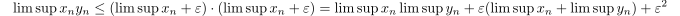
2
Indem man  konvergieren lässt, folgt insbesondere auch die Ungleichung:
Angenommen 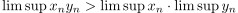, so existiert 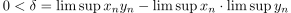
Indem man jetzt 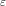 hinreichend klein wählt, folgt ein Widerspruch zu oben.
konvergieren lässt, folgt insbesondere auch die Ungleichung:
Angenommen 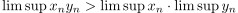, so existiert 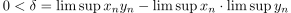
Indem man jetzt 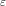 hinreichend klein wählt, folgt ein Widerspruch zu oben.